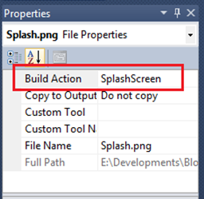

This sample identifies how to create a splash screen easily by WPF
Building the Sample
Adding a Splash Screen to a WPF application is very easy :
1-Create a WPF application using Visual Studio. And add your Splash Screen image to the project
2-change the build action of your image Properties to “SplashScreen”.

Now your splash screen will be seen before the main window of your application .
---------------------------------------------------------------------------------------------------------------------------
If you want to create a splash screen with WPF application for specific lenght of time
1-Create a WPF application using Visual Studio. And add your Splash Screen image to the project
2-Make sure that the build action of your image Properties is set to "Resource" Not “SplashScreen”.
<Application x:Class="Splash_Screen.App"
xmlns="http://schemas.microsoft.com/winfx/2006/xaml/presentation"
xmlns:x="http://schemas.microsoft.com/winfx/2006/xaml"
StartupUri="MainWindow.xaml">
<Application.Resources>
</Application.Resources>
</Application>
<Application x:Class="Splash_Screen.App" xmlns="http://schemas.microsoft.com/winfx/2006/xaml/presentation" xmlns:x="http://schemas.microsoft.com/winfx/2006/xaml" StartupUri="MainWindow.xaml"> <Application.Resources> </Application.Resources> </Application>
using System; using System.Collections.Generic; using System.Configuration; using System.Data; using System.Diagnostics; using System.Linq; using System.Threading; using System.Windows; namespace Splash_Screen { /// <summary> /// Interaction logic for App.xaml /// </summary> public partial class App : Application { private const int MINIMUM_SPLASH_TIME = 1500; // Miliseconds private const int SPLASH_FADE_TIME = 500; // Miliseconds protected override void OnStartup(StartupEventArgs e) { // Step 1 - Load the splash screen SplashScreen splash = new SplashScreen("splash.png"); splash.Show(false, true); // Step 2 - Start a stop watch Stopwatch timer = new Stopwatch(); timer.Start(); // Step 3 - Load your windows but don't show it yet base.OnStartup(e); MainWindow main = new MainWindow(); // Step 4 - Make sure that the splash screen lasts at least two seconds timer.Stop(); int remainingTimeToShowSplash = MINIMUM_SPLASH_TIME - (int)timer.ElapsedMilliseconds; if (remainingTimeToShowSplash > 0) Thread.Sleep(remainingTimeToShowSplash); // Step 5 - show the page splash.Close(TimeSpan.FromMilliseconds(SPLASH_FADE_TIME)); main.Show(); } }
using System; using System.Collections.Generic; using System.Configuration; using System.Data; using System.Diagnostics; using System.Linq; using System.Threading; using System.Windows; namespace Splash_Screen { /// <summary> /// Interaction logic for App.xaml /// </summary> public partial class App : Application { private const int MINIMUM_SPLASH_TIME = 1500; // Miliseconds private const int SPLASH_FADE_TIME = 500; // Miliseconds protected override void OnStartup(StartupEventArgs e) { // Step 1 - Load the splash screen SplashScreen splash = new SplashScreen("splash.png"); splash.Show(false, true); // Step 2 - Start a stop watch Stopwatch timer = new Stopwatch(); timer.Start(); // Step 3 - Load your windows but don't show it yet base.OnStartup(e); MainWindow main = new MainWindow(); // Step 4 - Make sure that the splash screen lasts at least two seconds timer.Stop(); int remainingTimeToShowSplash = MINIMUM_SPLASH_TIME - (int)timer.ElapsedMilliseconds; if (remainingTimeToShowSplash > 0) Thread.Sleep(remainingTimeToShowSplash); // Step 5 - show the page splash.Close(TimeSpan.FromMilliseconds(SPLASH_FADE_TIME)); main.Show(); } }